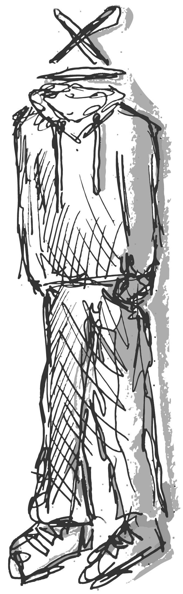

weekly nerd blog
welkom bij mijn waanzinnig interessante weekly nerd blog, waar ik mijn aantekeningen en spontane reflecties deel met de wondere wereld van het internet.
web app from scratch
wafs was een leuke introductie tot de minor. de lessen zelf bestonden vooral uit zelfstandig werken en er was een klein gebrek aan klassikale momenten, maar dat was prima.
het team onderdeel was leerzaam, vooral om het hele git gebeuren weer op te frissen.
ik heb bij wafs ook geleerd hoe ik data moet fetchen, al deed ik dat op een waanzinnig onhandige manier. daar heb ik wel het een en ander van opgestoken.
link naar repocss to the rescue
dit vak was qua structuur en leerzaamheid by far het allerbeste.
de workshops waren in grote getalen aanwezig, de een nuttiger dan de ander, maar altijd leerzaam.
ik heb veel geleerd over nieuwe css technieken, niet echt veel meer dan dat, maar dat was volgens mij ongeveer ook wel de strekking van het vak.
link naar repobrowser technologies
ik heb gehoord dat sommigen van mijn medestudenten dit nice vonden en dat vind ik super voor hen, maar ik vond dit echt een verschrikking van een opdracht. ppk kon leuk vertellen over hoe leuk hij browsers vond, maar daar hield het ‘leuke’ ook meteen op.
ik heb wel veel geleerd over html, voornamelijk over forms. en de :has selector en dat die soms best wel flink ingewikkeld kan zijn. uiteindelijk ben ik wel trots op de vormgeving die ik heb gemaakt.
link naar repohuman centered design
ik vind hcd een heel cool vak en ik denk dat ik er best iets geinigs voor heb gemaakt. om echt exclusief voor een ander te ontwerpen is iets dat je nooit uit jezelf of voor een opdrachtgever zou doen, daarom is het tof dat we die kans nu op school krijgen.
ik heb geleerd om met gsap scrolltrigger om te gaan (soort van, soort van ook weer niet) en svg animaties te maken.
link naar repoapplication programming interfaces
api maakte me bang door het hele back-end gebeuren (blok tech maakte me niet blij), maar uiteindelijk was het een heel leuk vak waarin we best wel vrij werden gelaten met wat we wilden doen en waar de focus op moest liggen.
ik heb geleerd dat een simpel servertje opzetten zo erg nog niet is, dat goed zijn in css best veel goed kan maken, gsap cool is maar css scroll driven animation nog cooler.
link naar reporeflectie
- css to the rescue is het leukste cmd vak wat ik tot nu toe heb mogen doen en ik ben wel trots op wat het geworden is, al is het meer een soort rare collage dan een samenhangend geheel (boeit me niet echt)
- browser tech had me even flink te pakken, omdat ik het gegeven zo oersaai vond dat ik mezelf maar niet kon motiveren om een begin te maken. ik ben zo ongeveer 2 dagen voor de deadline begonnen en heb er nog een zeventje uit kunnen trekken maar het kreeg zeker geen schoonheidsprijs. mijn time management en planning skills mogen wel wat beter worden.
- de hackaton heeft me geleerd dat samenwerken heus wel plezier kan opleveren, als je in een groepje zit met mensen die hetzelfde doel voor ogen hebben (was me nog niet vaak gelukt in deze tragedie die ze het hbo noemen)
ook nog leerdoelen
ja, dat ook nog
ik zal er verder geen woorden aan vuil maken, hier zijn ze.
- gsap masteren: ik heb css animatie inmiddels aardig onder de knie, maar wil graag ontdekken waar de mogelijkheden van css ophouden en hoe gsap dingen nog fancyer en cooler kan maken.
- hulp vragen: ik ben daar niet zo goed in maar het zou me een hoop tijd en frustratie kunnen besparen. ik wil het liefste alles zelf doen maar zo goed ben ik nou ook weer niet.
- nettere code schrijven: de chaos in mijn hoofd wordt netjes gereflecteerd in de chaos in mijn code, maar dit is niet zo handig voor andere mensen die mijn code moeten kunnen lezen en begrijpen. ik wil me hierin voornamelijk op css focussen.
- toegankelijkheid direct toepassen: ik merk dat toegankelijkheid vaak als afterthought komt en dat ik dan aan het einde van elk project een halve dag kwijt ben aan prefers-reduced-motion toevoegen aan al mijn transitions en animaties. niet handig, best stom. moet anders.
kilian valkhof
stop using js for that!
reflectie
ik vond de talk van kilian heel leerzaam, hij praatte over veel html dingetjes die ik nog niet eerder kende. ik vond vooral het stukje over dialogs en container queries cool. ook vind ik zijn ideeën over het gebruik van javascript inspirerend: zo weinig mogelijk js gebruiken klinkt mij goed in de oren.
ik was ook wel geïntrigeerd door zijn browser polypane, die wil ik graag in de toekomst gaan ontdekken.
fenna de wilde
toegankelijkheid
reflectie
het begrip dat fenna heeft van toegankelijkheid is indrukwekkend. ik wist zelf eigenlijk niks van aria, omdat dit redelijk nieuw is en er bij cmd nog geen aandacht aan werd gegeven. ik vond dit dus heel cool om over te leren.
ik ben zelf iemand die niet mijn main focus op toegankelijkheid heeft liggen, dus het was vooral nuttig om de 'simpele' richtlijnen te horen die ik makkelijk in eigen projecten kan stoppen, zoals font-size, kleurcontrast, lijnlengtes, focus states etc.
jeffrey arts
development = creation + creativity
reflectie
volgens mij heeft jeffrey presenteren niet als hobby. zijn verhaal was chaotisch en lastig te volgen. dat gezegd hebbende: wat hij maakt is waanzinnig cool. ik heb nooit eerder gezien hoe iemand code en fysieke kunstwerken kon combineren.
ook vond ik zijn toolbox idee wel handig, het lijkt me wel nice om dat in de toekomst zelf ook op te gaan bouwen. ik merk nu al dat ik vrijwel bij elk project terugga naar oudere dingen die ik heb gemaakt om dingen te hergebruiken, (save the planet!) dus ik denk dat zo'n toolboxje niet zou misstaan.
nils binder
reflectie
nils maakte goede punten over responsive design en de communicatie tussen ontwerpers en developers. in een ideale wereld zou dit natuurlijk perfect verlopen en zouden we fantastische responsive ontwerpen maken waarin in het proces al rekening wordt gehouden met de flexibiliteit van het web.
ik denk niet dat design tools afstand zullen doen van de absolute units, en ik denk dat bedrijven nog steeds gebruik gaan maken van tailwind, maar ik ben een cynische zak en ik hoop dat er meer designer/developers zoals nils zijn.
zelf wil ik als creative developer een goede balans vinden tussen design en development, en wil ik rekening houden met grote schermen en wat er gebeurt met de oersaaie witruimte die ontstaat.
jeremy keith
declarative design
reflectie
jeremy en ik delen de mening dat javascript erg onnodig is in veel gevallen. html als basis, css als toevoeging en js als power. 'javascript moet doen wat alleen javascript kan doen'. deze filosofie ga ik zeker meenemen in mijn toekomstige projecten, vooral nu er met :has veel meer mogelijk is met css w.b. interactie.
ook heb ik van jeremy de unit clamp geleerd, wat een geniaal dingetje is dat ik zeker ga gebruiken om mn responsive skills wat te uppen.
marieke (en pim)
digitaal toegankelijk
reflectie
ik vind het leuk om mensen te horen praten over toegankelijkheid met zo veel passie! ik wist nog niet over de 'three flashes or below threshold', dus dat was vooral interessant. ook was de tip om zelf een screenreader te gebruiken welkom, want ik moet toegeven dat ik dat niet vaak genoeg doe.
rosa schuurman
circuit bending
reflectie
ik vond rosa super cool en haar hele circuit bending verhaal vond ik waanzinnig inspirerend, omdat het zo raar en out of the box is. ik denk niet dat ik er per se qua code iets van heb geleerd, maar de passie en drive waarmee zij rare dingen maakt vond ik heel erg leuk om te zien. ik zie mezelf zoiets ook nog wel doen als hobby.